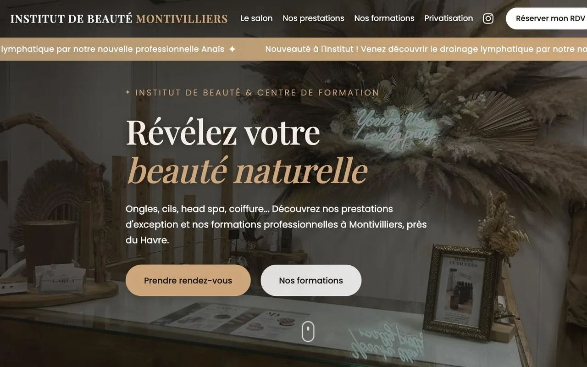
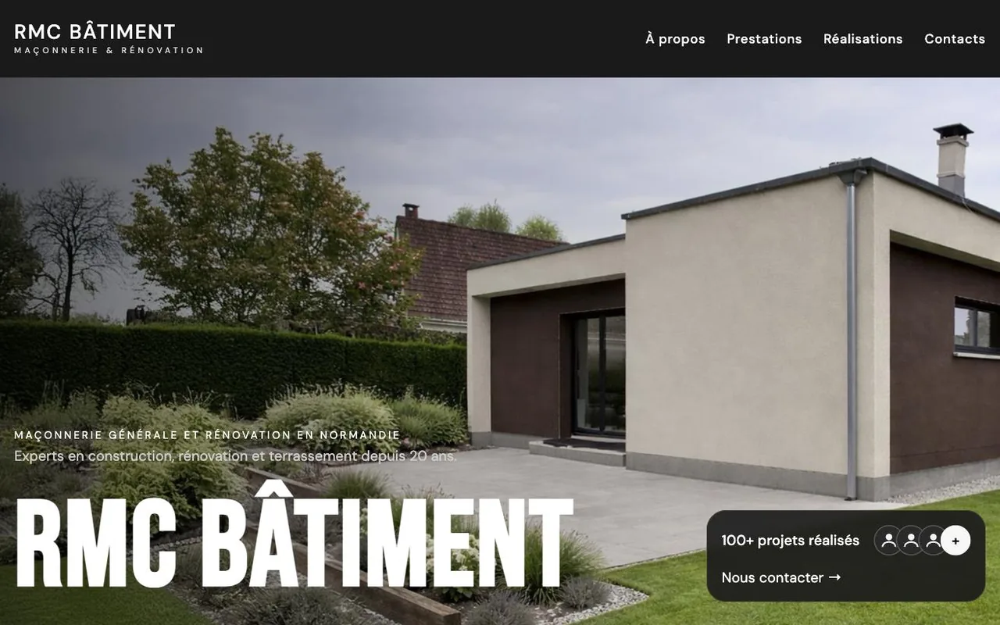

Création de site internet Un site qui vous ressemble.
Votre site parle à votre place quand vous êtes sur un chantier, en cuisine ou avec une cliente. MetriKs le dessine pour qu'il donne la même impression que vous en vrai : celle d'un pro à qui on a envie de confier son projet.


Trois secondes pour convaincre.
Votre futur client regarde votre site avant de le lire. Les photos, les couleurs et la place de votre numéro lui disent en un instant s'il peut vous faire confiance.
MetriKs part de ce que vous faites de mieux et le met en scène. Vos chantiers, vos plats, vos soins : ce sont eux qui convainquent. Le site leur donne toute la place.
Ce que votre site
change pour vous.
Un site MetriKs se voit, et il se ressent aussi dans votre quotidien.
Vous donnez l'adresse avec fierté
Un design dessiné pour votre métier, à partir de zéro. Il ne ressemble à aucun autre site de votre ville.
On vous appelle en un geste
MetriKs pense votre site d'abord pour le téléphone : votre numéro, vos horaires et votre adresse restent à portée de pouce.
Vos visiteurs restent
MetriKs code chaque site à la main, sans surcharge. Les pages s'affichent en un clin d'œil et vos visiteurs n'ont pas le temps de partir.
Google vous connaît dès le premier jour
Titres, textes, structure : MetriKs prépare votre référencement dès la conception du site.
Votre métier,
votre site.
Un restaurateur et un maçon n'attendent pas la même chose de leur site. MetriKs part des questions que se posent vos clients.
- Restaurants et barsCarte, réservation, avis clients
- Artisans et BTPChantiers réalisés, devis, zone d'intervention
- Beauté et bien-êtrePrestations, tarifs, prise de rendez-vous
- CommercesHoraires, produits, itinéraire
- Professions libéralesExpertise, confiance, prise de contact
- Clubs sportifsAffiches, identité, site du club
Ils ont franchi le pas.
Deux entreprises normandes, deux métiers, deux sites qui leur ressemblent.
Vos questions.
Combien coûte la création d'un site internet ?
Le prix dépend du nombre de pages et des fonctionnalités dont vous avez besoin. Après le diagnostic offert, MetriKs vous envoie un devis clair, sans engagement.
Combien de temps faut-il pour créer mon site ?
Le délai dépend de la taille du site et du temps qu'il faut pour réunir vos textes et vos photos. MetriKs vous donne un calendrier dès le départ, et vous suivez chaque étape dans votre espace client.
Je ne suis pas en Normandie. MetriKs peut-il créer mon site ?
Oui. MetriKs est basé à Montivilliers, près du Havre, et travaille avec des entreprises partout en France. Les rendez-vous se font en visio et le suivi passe par votre espace client.
Mon site sera-t-il visible sur Google ?
MetriKs construit chaque site sur les bases du référencement : une structure propre, des titres et des descriptions soignés, des pages rapides. Pour ressortir dans votre ville, le référencement local va plus loin.
Votre prochain client vous cherche déjà.
Réservez votre diagnostic offert : 45 minutes pour faire le point sur votre site, votre image et ce qui vous freine. En rendez-vous près du Havre ou en visio, où que vous soyez. Sans engagement.